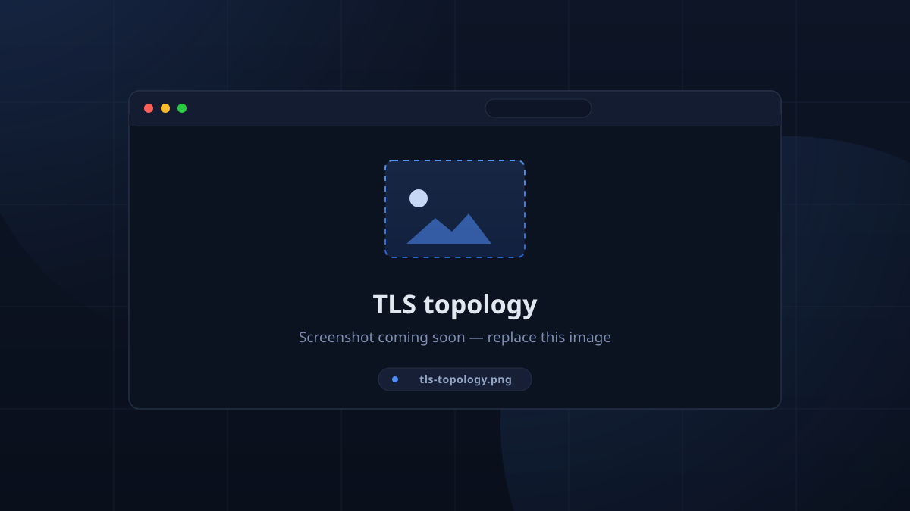

Configuration¶
TimeKeeper configuration lives in three places: environment variables on the server, the in-app Settings catalog stored in the database, and device-local settings on each client.
Server environment¶
See Running the server for the full
table (DATABASE_URL, TK_ADMIN_PASSWORD, RUST_LOG).
In-app settings (database)¶
The bulk of TimeKeeper is configured from Setup, the admin configuration page. Every field is described in the Settings Reference, including defaults.
Device settings (per client)¶
From the gear icon in the top bar (device-local, not the server):
| Setting | Default | Notes |
|---|---|---|
| Device Location | — | Required for kiosk check-in. "This device has no location set. Choose one in Settings before checking in." |
| Kiosk Mode | off | Lock the app fullscreen and always-on-top. Desktop platforms only. |
| Scan Debounce (minutes) | 5 |
Minimum time between two RFID scans of the same card. |
| Use TLS (HTTPS/WSS) | off | Web only through the page origin; on desktop/Android this toggles https:// + wss://. |
| Server Address | 127.0.0.1 |
Where the API lives (:4000 default port). Hidden on web — the web build always talks to its own origin. |
| GraphQL Port | 4000 |
API port. |
Timezone¶
Sessions store absolute UTC times; the Timezone setting is a UTC offset used for display and schedule interpretation. Set it in Setup → Sessions.
Encryption and authentication¶
- Authentication is JWT-based. Tokens carry the user id and a snapshot of their permissions at sign-in, and expire after 7 days.
- On first boot the server generates a random secret, stores it in its own
secretrow, and signs/verifies tokens with it. Nothing is stored in plain config files; anyone who can read your database can mint tokens, so keep the database credential private. - Permission changes take effect on a user's next login (the snapshot is taken at sign time).
- There is no additional at-rest encryption of session data. The
adminpassword is hashed, and tokens are signed.
TLS¶
The server does not terminate TLS itself; it exposes plain HTTP listeners and expects a reverse proxy in production.

| Where | How to get TLS |
|---|---|
| Production web | Caddy (see Deployment) — automatic HTTPS for tk.roboticswest.org, proxies /graphql*, /health. |
| Desktop / mobile clients | The device Settings → Use TLS toggle upgrades API calls to https/wss; pair it with a trusted certificate on the reverse proxy. |
| The web client | Always uses the page's origin — TLS follows whatever the proxy serves. |
Troubleshooting quick guide¶
- App bar red · Disconnected —
/healthunreachable: wrong Server Address/Port, TLS toggle mismatch, or the server process is down. - Kiosk won't check in — no Device Location set, or no active session within the check-in window.
- "A newer TimeKeeper is available" — the client compares its built version against the server every 3 h; either side being upgraded triggers it.